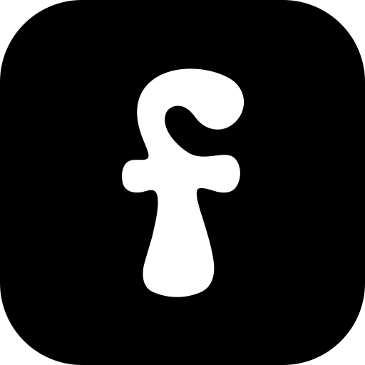

Paleta forma — definitiva
BASE
Blanco
#FFFFFF — fondo
Hueso
#F7F7F5 — sección
Borde
#E8E8E4
Gris
#6E6E68 — 2º texto
Tinta
#1A1A18 — texto
COLORES DE MARCA
PRINCIPAL
Azul taller
#2E6DA4
Botones, enlaces, metadata, foco.
CLARO · OSCURO · NOCHE
TALLER
Naranja
#D06A2C
Materiales: madera, barro, metal.
CLARO · OSCURO · NOCHE
AFUERA
Verde bosque
#3E5A40
Exterior, naturaleza, energía.
CLARO · OSCURO · NOCHE
Ver proyecto
Escríbeme
Leer la historia →
madera
exterior
pieza única
Azules más vivos
Cuatro versiones más saturadas del acero (#4A6D8C, arriba a la izquierda para comparar). Tipografía: 6e — Alan Sans en todo, metadata en caps con tracking amplio. Ya aplicada aquí.
Actual
#4A6D8C
7a · Azul taller
#2E6DA4
7b · Azul petróleo
#1E6F9F
7c · Azul cobalto
#1B5FCC
7d · Azul cian
#0E7C9B
El mismo azul, con vida. Sigue siendo sobrio pero ya no apagado — el salto más seguro desde el acero.
Un poco hacia el verde-azul, así que convive mejor con el bosque. Vivo y natural a la vez.
El más vivo y contemporáneo. Con el blanco se siente casi digital; funciona muy bien en web.
Más frío y luminoso, casi turquesa. El contraste con el naranja es el más eléctrico de los cuatro.
PRUEBA SOBRE FONDO OSCURO
7a PROYECTO 001
7b PROYECTO 001
7c PROYECTO 001
7d PROYECTO 001
Cada azul necesita una versión clara para el modo noche. Estas son las que usaría.
Nueva paleta + letra de metadata
Cambios pedidos: fondo blanco en vez de crema, entra un azul y sale el mostaza. Elige una paleta (5a–5c) y una letra de metadata (6a–6e). Los títulos siguen en Alan Sans Bold.
5a
Azul profundo
Azul noche como color serio de la marca. Naranja sigue siendo la acción; el contraste azul/naranja es el más fuerte de los tres.
#FFFFFF
#1E1A14
#D06A2C
#1F3A5F
#3E5A40
5b
Azul acero
Azul grisáceo, más frío y técnico — encaja con lo de impresión 3D y edge AI. El más sobrio de los tres.
#FFFFFF
#1A1A18
#C85F26
#4A6D8C
#3E5A40
5c
Azul eléctrico
Azul saturado como acento único; el naranja se vuelve secundario. La más joven y contemporánea, menos setentera.
#FFFFFF
#141414
#1B4DE4
#D06A2C
#3E5A40
Letra de metadata
Ahora es IBM Plex Mono. Alternativas — la última no es monoespaciada, es la misma Alan Sans, por si prefieres una sola familia en todo.
6a
Space Mono
PROYECTO 001 — 2026.04 — PINO
pieza única · hecha en casa
Retro y con carácter; la que más dialoga con el logo.
6b
Courier Prime
PROYECTO 001 — 2026.04 — PINO
pieza única · hecha en casa
Máquina de escribir. Artesanal y honesta, tipo cuaderno.
6c
Roboto Mono
PROYECTO 001 — 2026.04 — PINO
pieza única · hecha en casa
Neutra y discreta; desaparece y deja hablar al título.
6d
Syne Mono
PROYECTO 001 — 2026.04 — PINO
pieza única · hecha en casa
Rara y de autor. Mucho carácter — puede cansar en cantidad.
6e
Alan Sans · caps
PROYECTO 001 — 2026.04 — PINO
PIEZA ÚNICA · HECHA EN CASA
Sin monoespaciada: una sola familia en toda la marca. La más limpia y cohesiva.
Paleta final + tipografías para títulos
Paleta forma
Crema
#F6EEDD · fondo
Tinta
#1E1A14 · texto
Naranja
#D06A2C · acento
Mostaza
#E3A63B · detalles
Bosque
#3E5A40 · apoyo
4a
Caprasimo
Hicimos una silla para leer al sol.
La más groovy — hermana directa del logo. Puede ser mucho si todo grita.
4b
Bree Serif
Hicimos una silla para leer al sol.
Cálida y muy legible. Artesanal sin disfraz; envejece bien.
4c
DM Serif Display
Hicimos una silla para leer al sol.
La más elegante/premium. Contrasta con el logo en vez de imitarlo.
4d
Baloo 2 · Bold
Hicimos una silla para leer al sol.
Redonda como el logo pero sin serifas. Fresca, juvenil, simple.
4e
Abril Fatface
Hicimos una silla para leer al sol.
Retro setentera con peso, más editorial que juguetona.
Cómo explorar fuentes tú mismo
1. Entra a fonts.google.com (gratis, uso comercial permitido).
2. En «Preview text» escribe tu frase, p. ej. «Hicimos una silla para leer al sol».
3. Filtra por Serif o Display y ajusta el tamaño grande (40+).
4. ¿Viste una que te gusta? Dime el nombre y la pruebo aquí con tu paleta.
Direcciones para la identidad de forma
Tres caminos de color + tipografía, todos partiendo de tu logo y de la madera de tu silla. El logo siempre queda para la marca y los títulos grandes; la tipografía de apoyo es para todo lo demás. Elige una (o mezcla) y con eso construyo el design system completo.
3a
Taller — madera y arcilla
Sobria y artesanal. Hueso cálido, tinta y la terracota de tu silla. Serif editorial + sans neutra.
#F4EFE6
#221D16
#B65A24
#5F6148
Cada pieza se hace una vez.
Newsreader para títulos y citas. Archivo para textos, botones y datos. Silencioso, deja hablar al objeto.

3b
Bitácora — cuaderno de campo
Documental. Papel claro, verde bosque y datos en monoespaciada, como notas de laboratorio.
#FAF7F0
#23201C
#3E5A40
#C9973C
Lo que sale bien y lo que se quema.
Lora para leer largo. IBM Plex Mono para fechas, materiales y números.
3c
Sol — retro fresco
Sigue el espíritu groovy del logo. Crema, naranja quemado y mostaza; serif retro robusta.
#F6EEDD
#1E1A14
#D06A2C
#E3A63B
Hicimos una silla para leer al sol.
Young Serif para títulos, con el mismo cuerpo redondo del logo. Hanken Grotesk para el resto.
2a
La «f» sola
Tu pedido: la inicial sin contenedor. Versátil, funciona sobre cualquier fondo.
Como se verá en pestaña
{kind=link}
{kind=link}
2b
«f» en contenedor
Estilo icono de app: siempre se ve igual, no depende del fondo. Ideal para perfil de redes y app.

Como se verá en pestaña
{kind=link}
{kind=link}
2c
La «o» como símbolo
El centro inclinado de tu «o» es lo más distintivo del logo — funciona como marca abstracta, sin depender de la inicial.
Como se verá en pestaña
{kind=link}
{kind=link}
1a
Alineación óptica — recomendada
Espacio entre letras igualado a ojo, «o» centrada (estaba 11 px caída), «a» subida a la línea base. Fondo eliminado y lienzo recortado.

Prueba de tamaño mínimo
1b
Ajuste sutil
Solo lo evidente: se cerró el hueco r–m, se acercó la «a» y se subió la «o» un poco. Conserva más la irregularidad manual.

Antes (original)
Archivos y formatos
Todo generado a partir de la opción 1a. El SVG es tu archivo maestro: es vectorial y escala a cualquier tamaño sin perder calidad.
forma-negro.svgweb e imprenta
forma-blanco.svgfondos oscuros
forma-negro-2400.pngredes, docs · transparente
forma-blanco-2400.pngredes · transparente
forma-avatar-1024.pngfoto de perfil 1024×1024
{kind=link}
{kind=link}
{kind=link}
{kind=link}
{kind=link}
Reglas rápidas de uso
· Tamaño mínimo: 100 px de ancho en pantalla, 25 mm impreso.
· Deja aire alrededor: al menos el alto de la «o».
· Imprenta: entrega el SVG (o pídeme un PDF vectorial).
· Para favicon o icono de app el nombre completo no se lee — te puedo hacer un monograma con la «f».